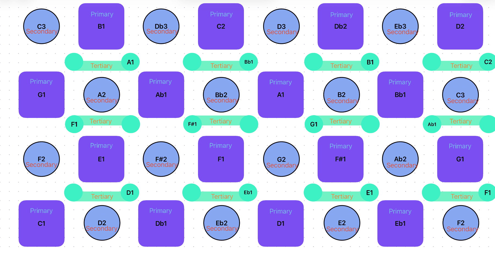
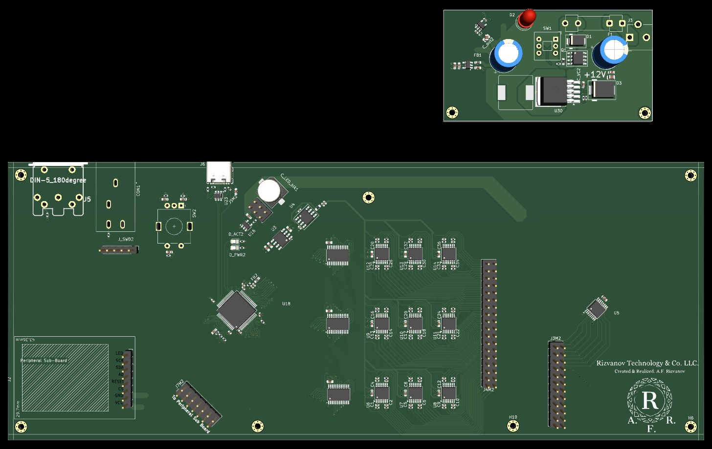
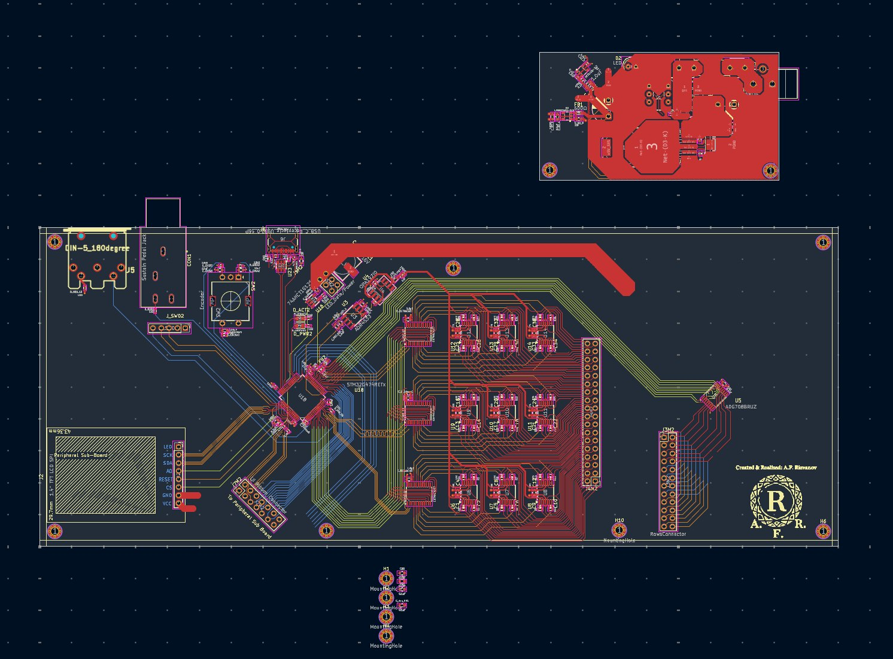

Project · May 2025 – present
TINI
Tonal Intervallic Net Instrument
A grid instrument laid out as a Tonnetz. Each cell is a note and each direction on the grid is a fixed interval, so a chord or a scale is a shape you can hold under your fingers. I've built and played twelve physical prototypes; the professional version is in design in KiCad.
Status: 12 prototype stages built, 4 worked. Professional 36 × 24 version in design. Nothing fabricated yet.
Three Tonnetz Grids in One Surface
The idea the instrument is built around
A Tonnetz is a lattice of notes first sketched by Leonhard Euler in 1739. On TINI every grid follows the same three rules:
- Up is a perfect 5th, and down is a perfect 5th lower.
- Up and to the right is a major 3rd; down and to the left reverses it.
- Up and to the left is a minor 3rd; down and to the right reverses it.
A major 3rd plus a minor 3rd makes a perfect 5th, so the moves close into triangles: a note with its up-right and up neighbors is a major triad (C, E, G), and a note with its up-left and up neighbors is a minor triad (C, E♭, G). A chord has the same shape in every key, so a progression becomes a path of shapes under the hand.
The professional play surface interleaves three of these grids, each 12 × 8 cells, told apart by pad shape: Primary (large round), Secondary (smaller round) and Tertiary (a dumbbell, where both ends and the bar are one note). Each grid on its own is a complete Tonnetz. They differ only by transposition: in the default setting the Secondary grid sits a major 9th above the Primary, so one step to the right of a Primary cell plays a 9th higher, and the Tertiary grid sits a whole step above the Primary. The transposition interval will be user-configurable. Three grids of 96 cells give 288 notes under the hand.

Reading 288 Cells
The 36 × 24 lattice is the instrument's note layout. Electrically, the 24 rows are grouped in threes, so only 8 row lines have to be driven, and each of the 36 columns is read on its own: 36 sense channels × 8 row drives gives 288 readings per scan. 96 addressable RGB LEDs sit in the Primary cells.
Prototype History
Listed by date · stage numbers are my own
Twelve physical stages in ten months, from single buttons to a pressure grid on hand-etched boards. Each one is listed with what it tested and what changed next.
-
00Jun 2025
Single button and LED cell
FailedThe first single-cell button and LED units, built to learn how one note cell should work before building a grid.
-
02Jun 2025
First large push-button board
FailedA 6 × 4 and 7 × 4 push-button LED board, the first attempt at a full playing surface.
-
03Jun 2025
Push-button board on I²C expanders
FailedThe same layout read through MCP23017 I²C port expanders. An I²C scan found no devices on the bus, so the next build wired the grid straight to the microcontroller.
-
05Jun – Jul 2025
8 × 7 push-button grid in wood columns
WorkedPush buttons mounted in wood columns, wired directly to an Adafruit Grand Central M4, with an LED board and a breath-pressure sensor module. Presses played notes into Logic Pro over MIDI.
What changed next: the push buttons felt robotic to play.
Play test, July 2025. Walk-around of the full build. -
01Aug 2025
Mini Tonnetz board
FailedA small Tonnetz board, routed on the back before and after mounting to wood.
-
04Sep – Oct 2025
9 × 11 grid in a 3D-printed housing
Gave upA 9 × 11 push-button grid in a housing I designed in TinkerCAD, with auxiliary potentiometers, a 4 × 4 beat pad, a sustain-pedal input and a board-to-controller cable converter.
-
06Oct – Nov 2025
Keyboard-switch grid on a motherboard
WorkedA mechanical keyboard-switch matrix stacked on a motherboard, a 74HC595 protoboard to drive the LEDs, and the Grand Central M4. Every note played into Logic Pro in every direction of the grid.
Why keyboard switches: a keyboard switch sounds the note only when the key bottoms out, the way a piano hammer reaches the string. What changed next: I wanted each note to carry velocity.
Play test running through every note in every direction, November 2025. The same build played by a second player. -
07Dec 2025 – Jan 2026
Velostat pressure mat with LEDs
FailedA Velostat pressure mat with addressable LEDs poked through it, the first attempt to put pressure sensing and lighting in one surface.
-
08Dec 2025
Pressure-matrix automation tool
Gave upCopper tape on a wood substrate, read through CD74HC4067 multiplexers and 74HC138 decoders, as a pressure-sensitive controller for recording DAW automation.
-
10Dec 2025
8 × 8 Velostat grid on a breadboard
WorkedThe first working pressure prototype: an 8 × 8 Velostat grid on wood with transistor-driven rows on a breadboard, connected to the computer and powered on.
-
09Jan 2026
Capacitive-touch wood casing
FailedA hinged wood frame that opens to show the electronics, with CD4067 breakout boards, power rails and an early TIMS module mounted inside. The capacitive-touch surface didn't work: I couldn't work out the pull-resistor values it needed. Pressure sensing also gives each note velocity, so a harder press plays louder, and the next builds went back to pressure.
Power-on of the capacitive-touch build, with the trumpet module running, January 2026. -
AAFeb 2026
Learning: board etching and FSR mechanics
LearningEtched 74HC595 and CD74HC4067 daisy-chain boards in ferric chloride, and etched a single force-sensing cell to see how it behaves before and after.
-
11Feb – Mar 2026
Pressure grid on hand-etched boards
Worked in conceptA Velostat and copper-strip pressure surface over hand-etched two-sided boards: CD74HC4067 multiplexers on the columns, 74HC595 shift registers on the rows, a switchable resistor array to try different divider values, 16 hand-made top-to-bottom vias and UV-cured solder mask, read by a Raspberry Pi 5 with an LCD. Presses showed up on a live heatmap. The full-size build wasn't finished; the design moved to PCBs instead.
Presses on the grid lighting up a live heatmap, February 2026. Soldering the hand-etched board, time-lapse. -
12May – Jun 2026
First PCB routing attempts
DiscontinuedA single 12 × 8 board, a 64 × 32 base-board concept and routing for the 36 × 24 play-surface connectors. Sensors, microcontroller and power on one board left too little routing room, so the design split into four boards.
-
13Jun 2026 – now
Professional 36 × 24 version
In designThe four-board professional instrument below, in KiCad.
-

Stage 11: the pressure grid on the bench, with the etched boards and Raspberry Pi behind it.
Professional Version: Four Boards
36 × 24 · in design in KiCad · not fabricated
| Board | What it is | Status |
|---|---|---|
| C · Motherboard | 8 copper layers, 250 × 155 mm. STM32G474 microcontroller reading 36 analog sense channels; USB-C, 5-pin DIN MIDI, sustain-pedal jack, rotary encoder and a debug header. | Schematic complete. Layout in final routing. |
| B · Sensor plate | 6 copper layers, 400 × 380 mm. 288 custom interdigitated pressure cells in three interleaved 12 × 8 grids, and 96 reverse-mount SK6812 RGB LEDs. | Schematic complete. Layout drawn; design-rule check not yet run. |
| A · Power | 12 V input stage with protection and a buck converter. | Drafted inside the motherboard file; being split into its own board. |
| D · Auxiliary | Peripheral sub-board; its connector is already placed on the motherboard. | Not started. |


TINI is planned as a product line for different players and price points: an 8 × 8 educational grid, a 16 × 24 intermediate version and this 36 × 24 professional instrument.
Design Decisions
- I²C expanders to direct wiring. The MCP23017 chain in stage 03 never showed up on the bus, so stage 05 wired the grid straight to the microcontroller.
- Push buttons to keyboard switches. Push buttons felt robotic. A keyboard switch sounds the note only when the key bottoms out, like a piano hammer reaching the string.
- Capacitive touch to pressure sensing. Pressure gives every note velocity, so a harder press plays louder.
- One board to four. Sensors, microcontroller and power on one board left too little routing room.
- ESP32-S3 to STM32G474. Keeping the ESP32 had started to force cuts to the requirements. The STM32 has far more inputs, more speed and room for onboard audio synthesis.
- Power on its own board. It frees routing space on the motherboard, keeps power-stage noise away from the sensing circuits, and makes the power stage repairable on its own.
Next: First Article and Bring-Up
Before anything is ordered: finish routing, bring the design-rule and electrical-rule checks to zero errors, and check the boards against the fabricator's manufacturing rules. The first order will be the motherboard and power board, plus a small test board with a few sensor cells, so the cell design is proven before the 400 × 380 mm sensor plate is ordered. The bring-up plan, its pass/fail checks and the results will be posted here.